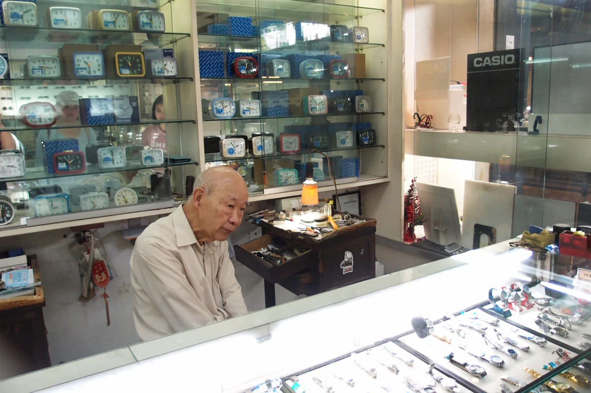
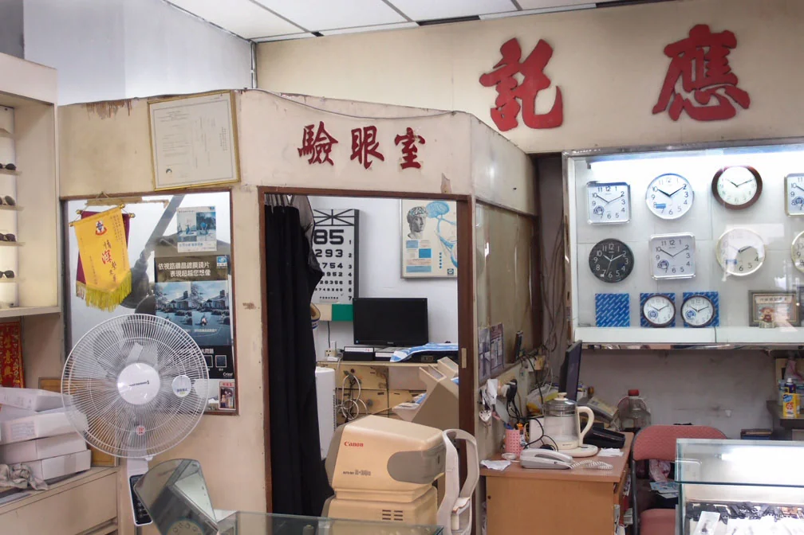
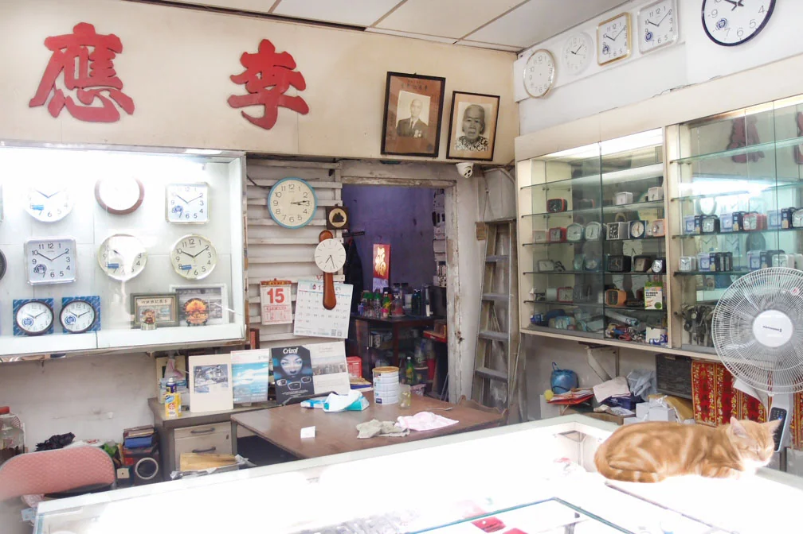
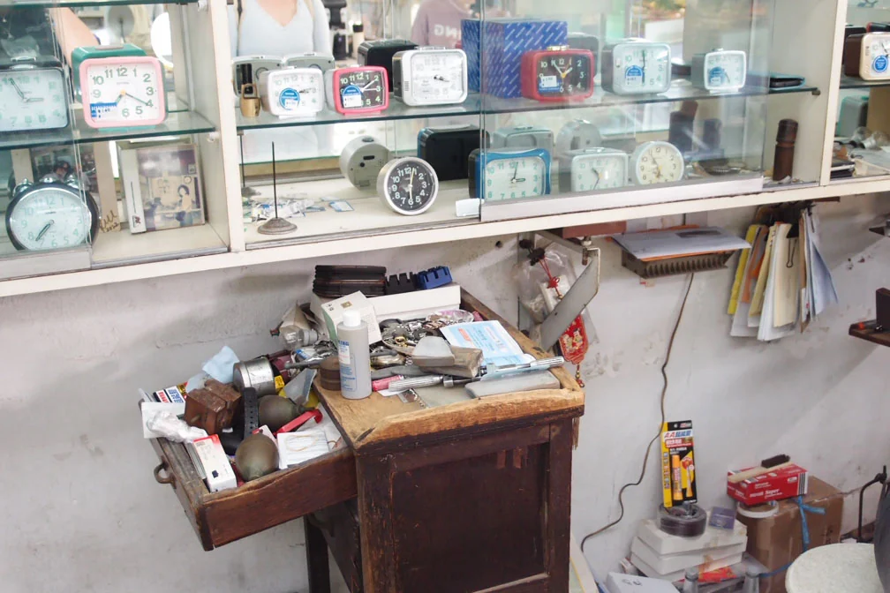
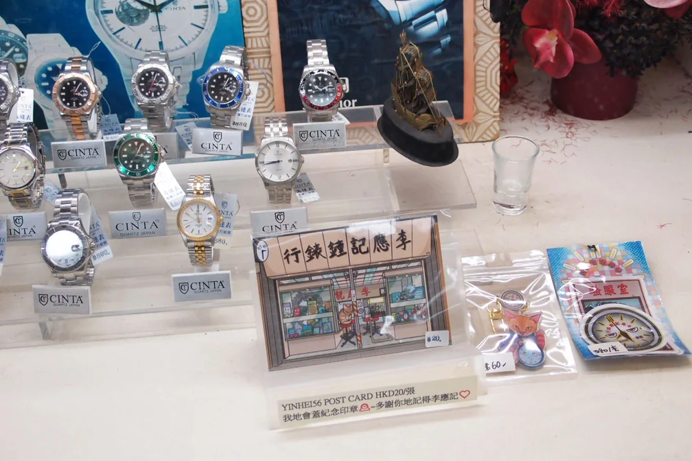
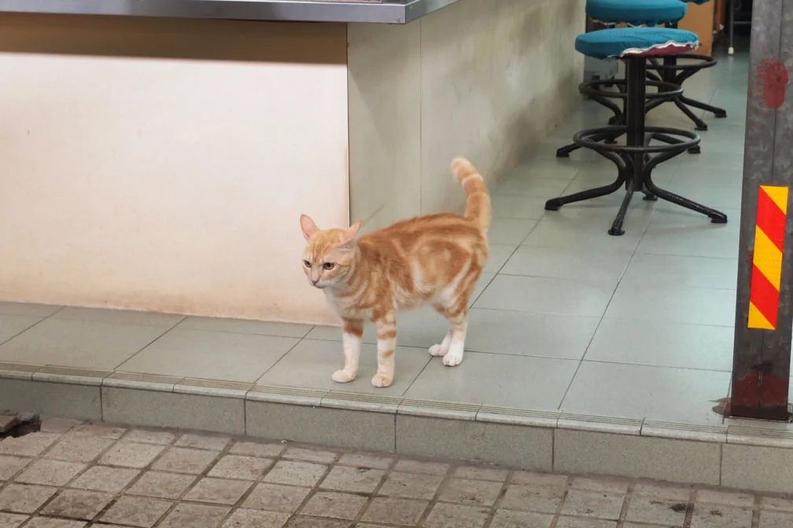
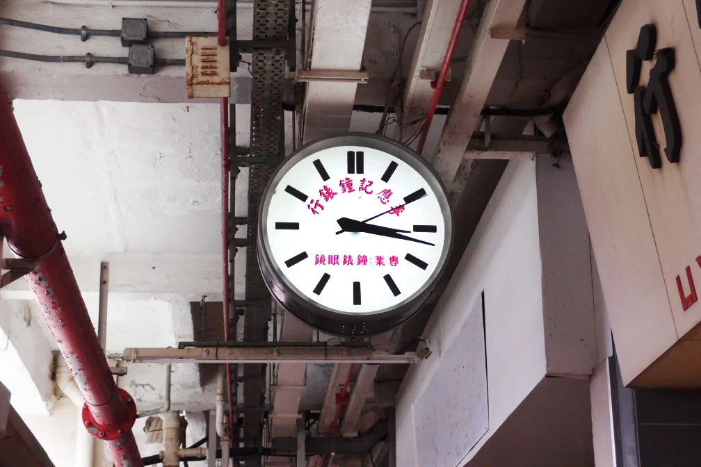

Under the lights, corrugated metal shutters are pulled down across Choi Hung Estate, with black-and-white signs marking the permanent closures of the stores. Compared with other estates, silence is approaching along with the redevelopment. Yet, elderly people still shuffle past ancient banyan trees rooted next to the stores, while two young girls pick out items at a grocery lined with cardboard stacks of dried goods and bottled drinks. Everyday life persists with quiet grace even as the estate slowly vanishes.
Lee Kwok-nam
Li Ying Kee







Under the colonnade of Kam Pik House, Lee Kwok-nam has repaired watches, clocks and glasses for most of his life. Most customers are Choi Hung residents, he said, but many travel from far away to find him.
By the middle of next year, he plans to close.
Upstairs and across the estate, the mood is calmer than the shuttered shops suggest. Many residents will not move for years, and when they do, most will stay close by.
Mrs. Kan, 94, has lived in Choi Hung for "more than 60 years, almost 70." She is one of its first tenants and helped found the residents' association, where she still spends every day.
Outside, the estate means something else to people who do not live there. On the afternoon we visited, we saw a large group of teenagers playing volleyball together. At the same time, elderly people were chit-chatting, parents were taking care of their children, and visitors were capturing their moments in Choi Hung Estate.
Choi Hung is coming down slowly, but not everything is going at the same speed.